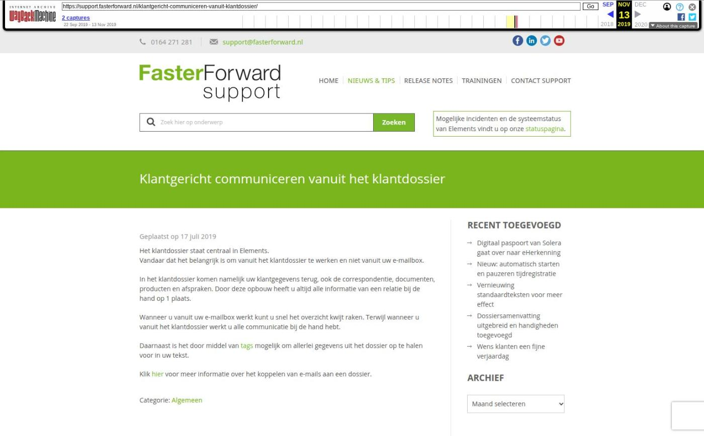

Update stukkenlijst en financiële module

Tekstinhoud
Geplaatst op 1 augustus 2019
Stukkenlijst
Financieel
Algemeen
Stukkenlijst
Procesoptimalisatie
In de stukkenlijst hebben we diverse verbeteringen doorgevoerd. Het is nu bijvoorbeeld mogelijk om een e-mail te verzenden naar de klant (of in concept klaar te zetten) als er stukken zijn verzonden vanuit de stukkenlijst. Dit is mogelijk wanneer er een aantal stukken (of alle stukken) zijn verzonden naar de maatschappij. Uiteraard wordt de e-mail opgesteld afhankelijk van welke stukken daadwerkelijk zijn verzonden.
Wilt u gebruik maken van deze functionaliteit, dan kan een consultant dit voor u inregelen. Neem hiervoor contact op met support@fasterforward.nl
Geldigheid documenten
De geldigheid van het document kan worden ingevuld bij een stuk in de stukkenlijst.
Dit vermindert de kans op fouten bij het aanleveren van deze stukken bij de maatschappij. Elements geeft namelijk bij het verzenden van deze stukken een melding wanneer de stukken bijna verlopen of al verlopen zijn.
Bij een verloopdatum binnen een aantal dagen wordt een oranje melding getoond:
Is de verloopdatum van het stuk reeds verlopen? Dan wordt een rode melding getoond:
Natuurlijk is het mogelijk (bijna) verlopen stukken te verzenden.
Klaarzetten voor verzending
Om het proces te vereenvoudigen wordt standaard de meest recente hypotheek, inkomens-, of levensverzekering met stukken geselecteerd bij het verzenden van stukken. Het is niet langer nodig handmatig de juiste stukken in de lijst te selecteren.
Koppelen vanuit e-mail overzichtelijker
Bij het koppelen van bijlagen vanuit een e-mail aan een stuk is nu direct inzichtelijk welke stukken nog aangeleverd dienen te worden. Dit is door middel van kopjes in de lijst duidelijk gemaakt.
Financieel
Grootboekrekening
Btw-code is verplicht gemaakt bij het aanmaken (en bewerken) van een grootboekrekening.
Zoeken op betalingskenmerk bij openstaande posten
Bij het verwerken van een bankafschrift is het nu mogelijk om bij de openstaande posten te zoeken op (een deel van) het betalingskenmerk. Dit is opgenomen in het filter.
Algemeen
In een vorige release hebben verschillende tabbladen in Elements een naam gekregen. Zo is sneller te zien in welk tabblad de e-mail of kalender openstaat. In deze release zijn meer modulenamen opgenomen in de naam van het tabblad.
Categorie: Algemeen